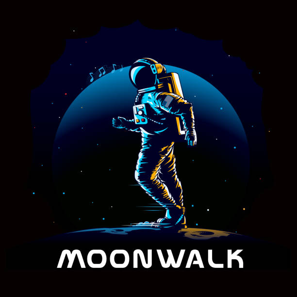

Walking on the Moon is one of humanity's most remarkable achievements. It represents a monumental leap in space exploration and technology. This blog delves into the history, science, and significance of Moon walks, celebrating the extraordinary journey of astronauts who ventured beyond our home planet.
The Moon walk was not just a step for mankind; it was a giant leap for human curiosity and exploration.
On July 20, 1969, Neil Armstrong and Buzz Aldrin made history as they became the first humans to walk on the Moon. The Apollo 11 mission marked a new era in space exploration, showcasing human ingenuity and the power of collaborative effort. Armstrong's famous words, "That's one small step for man, one giant leap for mankind," continue to inspire generations.
The technology that enabled Moon walks was groundbreaking. From the Saturn V rocket to the Lunar Module, every component played a crucial role in ensuring the mission's success. The innovations developed during the Apollo program have since influenced various fields, including computing, materials science, and telecommunications.
Moon walks provided invaluable scientific data, including lunar samples that have advanced our understanding of the Moon's composition. Beyond science, the achievements of the Apollo missions have had a profound impact on society, inspiring countless individuals to pursue careers in science, technology, engineering, and mathematics (STEM).
As we look to the future, the legacy of Moon walks continues to drive space exploration. With plans for future lunar missions and Mars exploration, the spirit of discovery that characterized the Apollo era remains strong. The Moon serves as a stepping stone for humanity's journey to the stars.